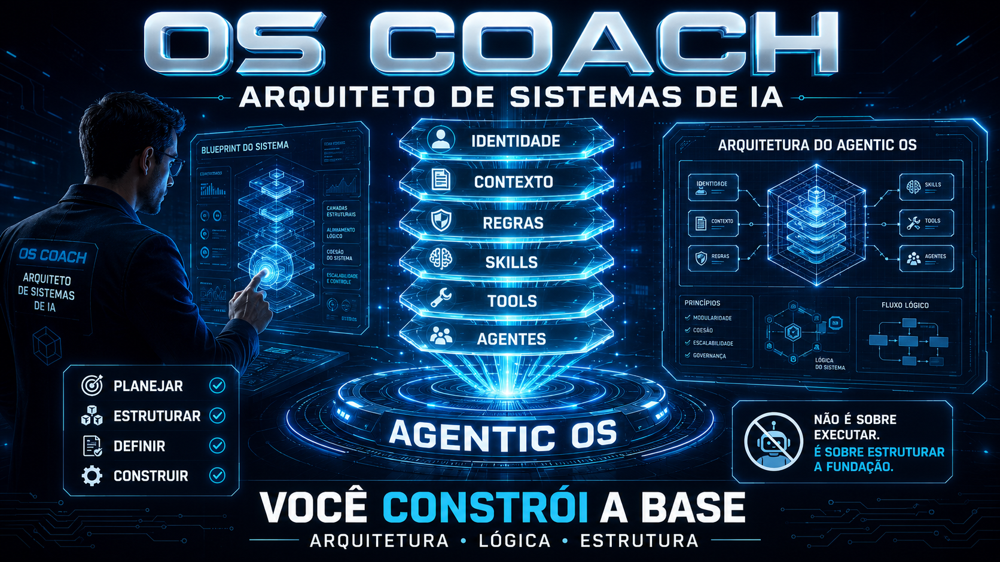
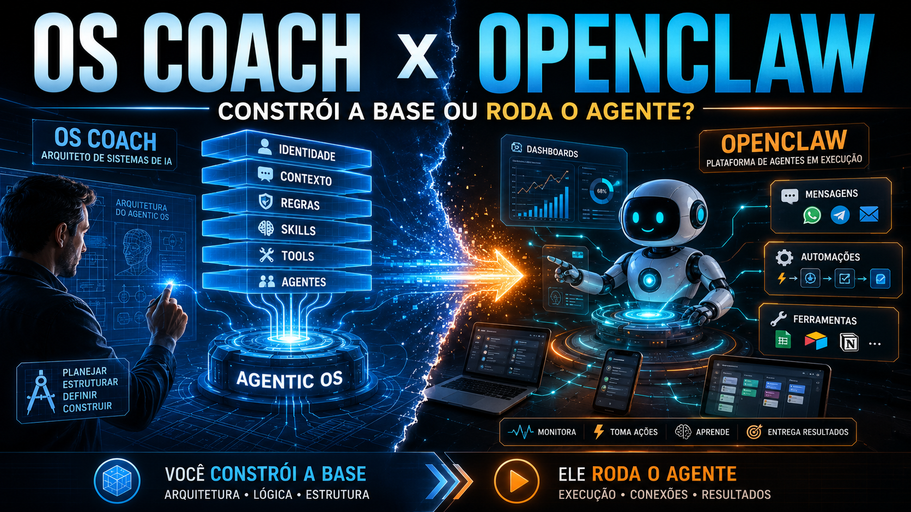

Ingeniería de Sistemas Operativos de IA — de cero a un OS activo
Construye centros de comando de IA, una capa a la vez, sin convertirte en ingeniero. La tesis del curso: no instales un OS agente; cultívalo.
Cómo leer: la pila se construye de abajo hacia arriba. Las capas inferiores (Identidad, Sustrato, Reglas) son la base estática; las superiores (Habilidades, Herramientas, Agentes) son la acción. El error n.º 1 es saltar directamente a la cima (Agentes).
Tu progreso, tus dudas y tus notas se guardan solo en tu navegador (localStorage). Usa Mi recorrido para exportar/importar.
Qué es un Sistema Operativo de IA
Un Sistema Operativo de IA (AIOS) es, en esencia, un centro de mando para un dominio específico de tu vida o de tu negocio. No es un producto único que instalas: es un puñado de carpetas + un archivo de identidad (o CLAUDE.md), independiente de la herramienta (sirve para Claude Code, Codex, open code).
El autor mantiene varios: un Freedom OS (residencias y pasaportes), un Tax OS (leyes y auditorías), un Skool OS (anuncios con su voz), además de Health OS y Marketing OS. Cada dominio se convierte en un OS a medida. La regla de oro: cultiva, no instales — un fin de semana te lleva al 80%, pero solo queda sólido con uso diario y auditoría.
Las 6 capas — y el gráfico circular que no está dividido en partes iguales
Todo OS tiene las mismas seis capas, pero el «gráfico circular» cambia de forma según el dominio: en un Tax OS el contexto pesa ~34%; en un Sales OS, dominan las herramientas y las skills. El orden que funciona va desde los cimientos hasta la acción.
El alma. Quién es el OS, a quién sirve, qué rechaza. Vive en el CLAUDE.md.
Lo que hay detrás. El conocimiento bruto y destilado sobre el que funciona el OS. La capa más grande.
Las barreras. Regla = sugerencia firme; gancho = determinístico (siempre/nunca).
Los verbos adquiridos. Tareas repetibles. Empieza manualmente y luego regístralas.
Las conexiones hacia afuera. La pregunta: ¿skill, CLI, MCP o API? CLIs de solo lectura para mayor seguridad.
Roles con criterio que orquestan skills. La ÚLTIMA capa, no la primera.
OS Coach × OpenClaw: tú construyes la base, él ejecuta el agente
Este curso te enseña a estructurar los cimientos: Identidad, Contexto, Reglas, Skills, Tools y Agentes. Primero construyes la base; solo después un agente empieza a ejecutarse sobre ella. Ahí es donde entra una plataforma de ejecución como OpenClaw (el «Jarvis» que ejecuta los agentes): mensajes, automatizaciones, herramientas y dashboards. El OS Coach prepara la base; OpenClaw ejecuta el agente.

Qué se incorporó en esta versión
Las 6 capas siguen siendo las mismas. Cada una incorporó lo que el ecosistema INEMA aprendió desde junio, más un módulo nuevo al final.
- 🔁 Identidad portátil: AGENTS.md + CLAUDE.md y las Lessons (2.1)
- 🧳 Contexto portátil: /prime, handoff y franjas de contexto (2.2)
- 🧱 Barreras que aprenden: mods, niveles N0–N4, FALHAS y LIMITES (2.3)
- 🧰 Skills en 2026: validar, no competir, reserva y perfiles (3.1)
- 🔌 Agent Runtime: puente MCP y fuente única de modelos (3.2)
- 🧭 Delegar con criterio: equipo de 3 roles y revisión cruzada (3.3)
- 🏗️ Casos reales: JARVIS, atención, consultoría (5.6)
- ⏱️ Módulo nuevo: OS que trabaja horas por su cuenta (5.7)
Las 5 rutas
📦 Qué es, las 6 capas y el glosario
El modelo mental y el vocabulario. Nadie avanza sin entender los términos. 3 módulos.
🪪 Identidad, sustrato y reglas
Las capas de fundación (estáticas). Sin ellas, los agentes no tienen en qué apoyarse. 3 módulos.
🤖 Habilidades, herramientas y agentes
Las capas de acción (dinámicas). Verbos y brazos para el OS — solo después de la base. 3 módulos.
⚙️ Tu primer OS con /os-coach
100% manos a la obra: desde iniciar a audit, capa por capa. 6 módulos.
🗽 Dominios reales y producción
La pizza cambia de forma en 6 dominios (Tax, Sales, Support, Content, Consulting, Freedom) + patrones de producción, casos reales del ecosistema y el OS que trabaja horas por su cuenta. 7 módulos.
Requisitos previos
✓ Necesitas
- ✓Claude Code (o Codex / open code) instalado.
- ✓Saber abrir una carpeta y escribir comandos simples en la terminal.
- ✓Un dominio en mente (negocio o vida personal) para construir tu OS.
No necesita
- •Ningún lenguaje de programación. La IA escribe los scripts.
- •Experiencia previa con agentes o MCP: todo se define inline en la primera aparición.
- •Servidor o build: las páginas se abren directamente en el navegador (incluso en file://).
Créditos y fuente
Curso basado en el módulo de Curso vivo de la comunidad earlyaidopters + la skill open-source OS Coach. O /os-coach guía a una persona sin conocimientos técnicos para construir su propio OS agéntico, una capa a la vez, en el loop Preguntar → Construir → Persistir → Siguiente → Auditar.
github.com/inematds/os-coach ↗